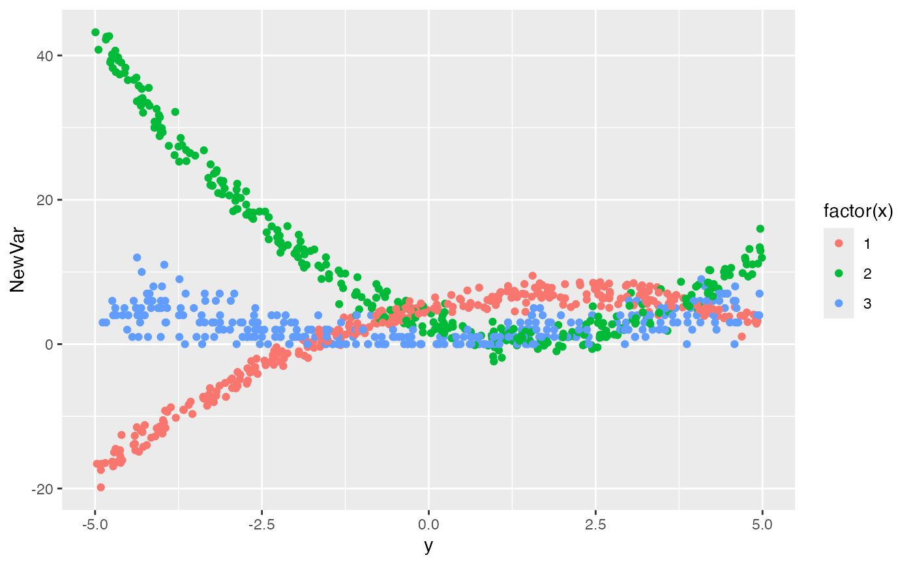

Add a single column to existing data set based on a condition
addCondition(condDefs, dtOld, newvar, envir = parent.frame())Name of definitions for added column
Name of data table that is to be updated
Name of new column to add
Environment the data definitions are evaluated in. Defaults to base::parent.frame.
An updated data.table that contains the added simulated data
# New data set
def <- defData(varname = "x", dist = "categorical", formula = ".33;.33")
def <- defData(def, varname = "y", dist = "uniform", formula = "-5;5")
dt <- genData(1000, def)
#> Warning: Probabilities do not sum to 1. Adding category to all rows!
# Define conditions
defC <- defCondition(
condition = "x == 1", formula = "5 + 2*y-.5*y^2",
variance = 1, dist = "normal"
)
defC <- defCondition(defC,
condition = "x == 2",
formula = "3 - 3*y + y^2", variance = 2, dist = "normal"
)
defC <- defCondition(defC,
condition = "x == 3",
formula = "abs(y)", dist = "poisson"
)
# Add column
dt <- addCondition(defC, dt, "NewVar")
# Plot data
library(ggplot2)
ggplot(data = dt, aes(x = y, y = NewVar, group = x)) +
geom_point(aes(color = factor(x)))
